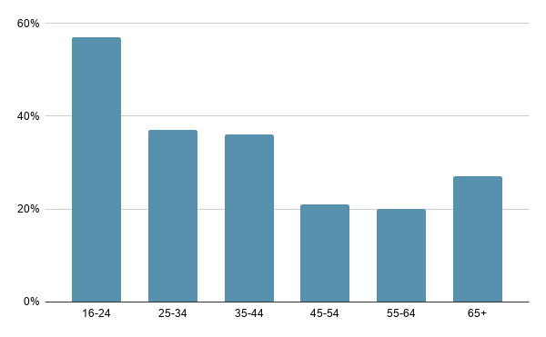
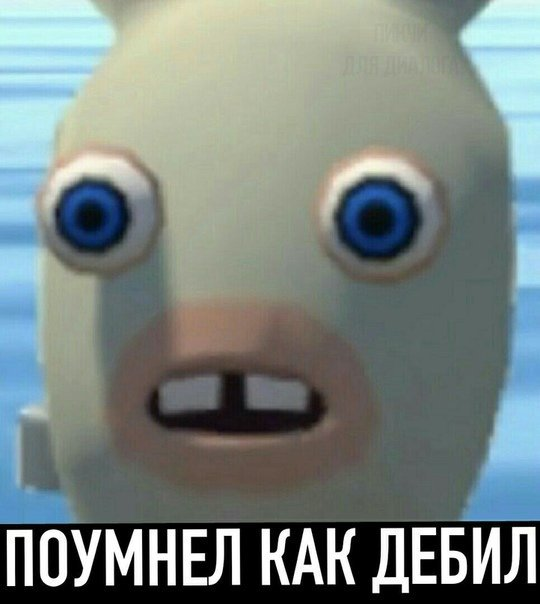
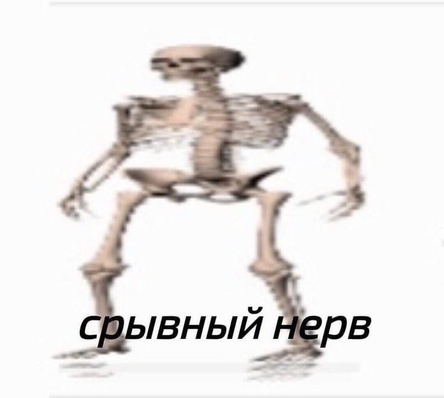
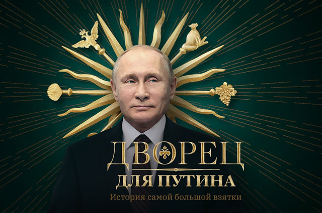

Social Media Usage in Russia
Top 5 Social Media for 2020[1]
- ВКонтакте (transcription: VKontakte) 78%
- Telegram 72.60%
- YouTube 64.8%
- WhatsApp 61.2%
- Instagram 49.2%
VK (short for VKontakte) - a Russian online social media based in Saint Petersburg. VK is available in multiple languages but it is predominantly used by Russian-speakers.
Demographic graph[2]
The primary age group that uses social media in Russia is 16 - 24 years old (57%). People aged 55-64 use social networks the least; only 20% of them are registered in Social Media.
Most popular memes in Russia for the beginning of 2021

Translation: “lucky lucky”

Translation: “smarter like a moron”

Translation: "breakdown" with swapped first letters of the words

This is Navalny during the trial showing heart to his wife. This picture is often used in different memes about love and relationships

Translation: “Palace for Putin”. It is a video cover of the main oppositionist of Russia, Navalny, about Putin's palace